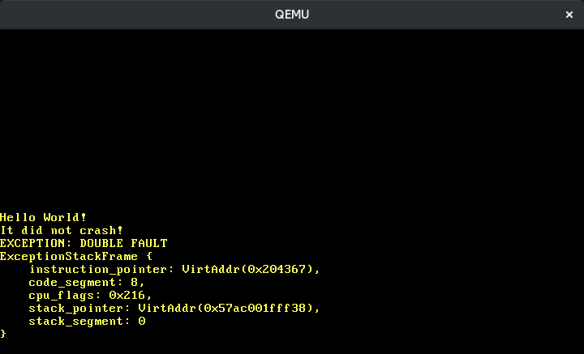

ハードウェア割り込み
この記事は翻訳されたものです： この記事はHardware Interruptsをコミュニティの手により翻訳したものです。そのため、翻訳が完全・最新でなかったり、原文にない誤りを含んでいる可能性があります。問題があればこのissue上で報告してください！
翻訳者： @shimomura1004 及び @woodyZootopia.
この記事では、ハードウェア割り込みを正しく CPU に転送するためにプログラム可能な割り込みコントローラの設定を行います。これらの割り込みに対処するため、例外ハンドラのときに行ったのと同じように割り込み記述子表に新しいエントリを追加しなくてはいけません。ここでは周期タイマ割り込みの受け方と、キーボードからの入力の受け方を学びます。
このブログの内容は GitHub 上で公開・開発されています。何か問題や質問などがあれば issue をたててください (訳注: リンクは原文(英語)のものになります)。またこちらにコメントを残すこともできます。この記事の完全なソースコードはpost-07 ブランチにあります。
目次
🔗概要
割り込みは、接続されたハードウェアデバイスから CPU に通知を行う方法を提供します。よって、新しい文字がないか定期的にカーネルにキーボードを確認させるかわりに (ポーリングと呼ばれます)、キー入力のたびにキーボードのほうからカーネルに通知することができます。この方法の場合、カーネルはなにかが起きたときだけ処置を行えばよいので、とても効率がいいです。カーネルは次のポーリングのタイミングを待たずとも即座に反応することができるので、応答時間も短くなります。
すべてのハードウェアを直接 CPU に接続することはできません。そのかわりに、独立した 割り込みコントローラ がすべてのデバイスからの割り込みを取りまとめて CPU に通知します:
____________ _____
Timer ------------> | | | |
Keyboard ---------> | Interrupt |---------> | CPU |
Other Hardware ---> | Controller | |_____|
Etc. -------------> |____________|
多くの割り込みコントローラはプログラム可能です。これはそれぞれの割り込みに対して異なる優先度を設定することができるということです。例えば正確な時間管理を保証するために、キーボード割り込みよりもタイマ割り込みに高い優先度を設定することができます。
例外とは異なり、ハードウェア割り込みは 非同期的 です。これは、ハードウェア割り込みは実行コードからは完全に独立していて、どんなタイミングでもハードウェア割り込みが発生する可能性があるということです。よって突如として私達のカーネルはある種の並行性を持つようになり、これにより並行処理に関するあらゆる潜在的なバグを持つことになります。Rust の厳格な所有権モデルはグローバルな状態を変更可能にすることを禁止しているため、この問題に役立ちます。ただしこの記事の後半で見るとおり、それでもデッドロックは発生してしまいます。
🔗8259 PIC
Intel 8259 は 1976 年に登場したプログラム可能な割り込みコントローラ (programmable interrupt controller: PIC) です。ずいぶん前に、より新しい APIC によって置き換えられましたが、そのインタフェースは現在のシステムでも後方互換性のためにサポートされています。8259 PIC は APIC よりも設定がかなり簡単なので、後の記事で APIC に切り替える前に、8259 PIC を使って割り込み処理に入門することにしましょう。
8259 PIC は、割り込み線8本と、CPU と通信するための線を数本持っています。当時の典型的なシステムは 8259 PIC をプライマリとセカンダリの2つ搭載しており、セカンダリの PIC はプライマリの PIC の割り込み線のひとつに接続されていました:
____________ ____________
Real Time Clock --> | | Timer -------------> | |
ACPI -------------> | | Keyboard-----------> | | _____
Available --------> | Secondary |----------------------> | Primary | | |
Available --------> | Interrupt | Serial Port 2 -----> | Interrupt |---> | CPU |
Mouse ------------> | Controller | Serial Port 1 -----> | Controller | |_____|
Co-Processor -----> | | Parallel Port 2/3 -> | |
Primary ATA ------> | | Floppy disk -------> | |
Secondary ATA ----> |____________| Parallel Port 1----> |____________|
この図は典型的な割り込み線の割り当てを示しています。15本の線の多くは割り当てが固定されています。例えば、セカンダリの PIC の4番目の線はマウスに割り当てられています。
それぞれのコントローラは、“コマンド” ポートと “データ” ポートという2つの I/O ポート を通じて設定を行うことができます。プライマリコントローラでは、これらのポートは 0x20 (コマンド) と 0x21 (データ) になります。セカンダリコントローラでは、0xa0 (コマンド) と 0xa1 (データ) になります。PIC の設定方法の詳細は osdev.org の記事を見てください。
🔗実装
PIC のデフォルト設定では、0から15の割り込みベクタ番号を CPU に送るようになっているため使うことができません。これらの番号は既に CPU 例外で使われており、例えば8番はダブルフォルトに対応します。この重複による問題を解決するためには PIC の割り込みを別の番号にマッピングし直さないといけません。割り込み番号の範囲は例外と重複しなければ問題になりませんが、32個の例外スロットのあとの最初の空き番号である32から47の範囲がよく使われます。
コマンドポートとデータポートに特別な値を書き込むことで PIC の設定を行います。幸い pic8259 というクレートが既にありますので、初期化シーケンスを自分たちで書く必要はありません。クレートの動作に興味があるならソースコードを確認してみてください。とても小さくドキュメントも豊富です。
クレートを依存関係を追加するため、以下の内容をプロジェクトに追加します:
# in Cargo.toml
[dependencies]
pic8259 = "0.10.1"
このクレートが提供する主な抽象化は、上で見たようなプライマリとセカンダリの PIC からなるレイアウトを表わす ChainedPics 構造体です。これは以下のように使うように設計されています:
// in src/interrupts.rs
use pic8259::ChainedPics;
use spin;
pub const PIC_1_OFFSET: u8 = 32;
pub const PIC_2_OFFSET: u8 = PIC_1_OFFSET + 8;
pub static PICS: spin::Mutex<ChainedPics> =
spin::Mutex::new(unsafe { ChainedPics::new(PIC_1_OFFSET, PIC_2_OFFSET) });
上で述べたように、PIC のオフセットを32から47の範囲に設定しています。ChainedPics 構造体を Mutex でラップすることで、次のステップで必要になる安全な可変アクセスを (lock メソッドを使って) 得ることができます。間違ったオフセットを指定すると未定義動作となるため、ChainedPics::new 関数は unsafe です。
8259 PIC の初期化は init 関数内で行うことができます:
// in src/lib.rs
pub fn init() {
gdt::init();
interrupts::init_idt();
unsafe { interrupts::PICS.lock().initialize() }; // new
}
PIC の初期化を行うために initialize 関数を使います。ChainedPics::new 関数と同じように、PIC を間違って設定すると未定義動作となるため、この関数も unsafe になります。
すべてうまくいけば、cargo run を実行すると “It did not crash” というメッセージが引き続き表示されるはずです。
🔗割り込みの有効化
CPU の設定で割り込みが無効化されていたため、これまではなにも起きませんでした。これは CPU が割り込みコントローラからの信号をすべて無視していたため、割り込みが CPU に届かなかったということです。これを変更しましょう:
// in src/lib.rs
pub fn init() {
gdt::init();
interrupts::init_idt();
unsafe { interrupts::PICS.lock().initialize() };
x86_64::instructions::interrupts::enable(); // new
}
x86_64 クレートの interrupts::enable 関数は、特別な sti (“set interrupts”) 命令を実行し外部割り込みを有効にします。ここで cargo run を実行するとダブルフォルトが発生します:

ダブルフォルトが発生する理由は、ハードウェアタイマ (正確には Intel 8253) がデフォルトで有効になっているため、割り込みを有効にするとすぐにタイマ割り込みを受け取り始めるためです。この割り込みのためのハンドラ関数を定義していないため、ダブルフォルトのハンドラが呼ばれることになります。
🔗タイマ割り込みの処理
上述した図にある通り、タイマはプライマリの PIC の0番目の線を使います。これはタイマ割り込みは32番 (0 + オフセットの32) の割り込みとして CPU に届くということです。32をハードコーディングする代わりに InterruptIndex enum に保存することにしましょう:
// in src/interrupts.rs
#[derive(Debug, Clone, Copy)]
#[repr(u8)]
pub enum InterruptIndex {
Timer = PIC_1_OFFSET,
}
impl InterruptIndex {
fn as_u8(self) -> u8 {
self as u8
}
fn as_usize(self) -> usize {
usize::from(self.as_u8())
}
}
Rust の enum は C 言語ライクな enum であるため、各ヴァリアントに直接インデックスを指定できます。 repr(u8) アトリビュートは、各ヴァリアントが u8 型で表されるよう指定しています。今後、他の例外に対してヴァリアントを追加していきます。
さて、タイマ割り込みへのハンドラ関数を追加していきます:
// in src/interrupts.rs
use crate::print;
lazy_static! {
static ref IDT: InterruptDescriptorTable = {
let mut idt = InterruptDescriptorTable::new();
idt.breakpoint.set_handler_fn(breakpoint_handler);
[…]
idt[InterruptIndex::Timer.as_usize()]
.set_handler_fn(timer_interrupt_handler); // new
idt
};
}
extern "x86-interrupt" fn timer_interrupt_handler(
_stack_frame: InterruptStackFrame)
{
print!(".");
}
CPU は例外に対しても外部割り込みに対しても同じように反応するため、我々が定義した timer_interrupt_handler は例外ハンドラと同じシグニチャを持っています (唯一の違いは、一部の例外はエラーコードをプッシュすることです)。InterruptDescriptorTable 構造体は IndexMut トレイトを実装しているので、配列の添字記法でそれぞれのエントリにアクセスすることができます。
我々のタイマ割り込みハンドラでは画面にドットを表示します。タイマ割り込みは定期的に発生するので、タイマティックのたびに新たなドットが現れるだろうと思うでしょう。しかし実行してみると、ドットはひとつしか表示されません:

🔗割り込みの終了
この理由は、PIC は明示的な “割り込みの終了” (end of interrupt: EOI) 信号を割り込みハンドラが通知してくると期待しているからです。この信号は、割り込みが既に処理されシステムが次の割り込みを受け取る準備ができたことをコントローラに伝えます。そのため PIC は、我々のシステムはまだ最初のタイマ割り込みを処理している最中だと考え、次の割り込みを送らずに辛抱強く EOI 信号を待ち続けているのです。
EOI を送るためには、再び静的な PICS 構造体を使います:
// in src/interrupts.rs
extern "x86-interrupt" fn timer_interrupt_handler(
_stack_frame: InterruptStackFrame)
{
print!(".");
unsafe {
PICS.lock()
.notify_end_of_interrupt(InterruptIndex::Timer.as_u8());
}
}
notify_end_of_interrupt は、プライマリとセカンダリのどちらの PIC が割り込みを送ったかを判断し、コマンドポートとデータポートを使って EOI 信号をそれぞれのコントローラに送ります。セカンダリの PIC はプライマリの PIC の入力線に接続されているため、もしセカンダリの PIC が割り込みを送った場合は、両方の PIC に信号を送る必要があります。
正しい割り込みベクタ番号を使うよう気をつけないと、まだ送信されていない重要な割り込みを間違って消してしまったり、システムがハングしてしまうかもしれません。この関数が unsafe になっているのはこのためです。
cargo run を実行すると、画面上にドットが定期的に表示されるでしょう:

🔗タイマの設定
我々が使ったハードウェアタイマは プログラム可能インターバルタイマ 、もしくは短く PIT と呼ばれています。名前が示すように、PIT は2つの割り込みの間の間隔を設定することができます。すぐに APIC タイマに切り替えるのでここで詳細に入ることはしませんが、OSDev wiki には PIT の設定に関する記事が豊富にあります。
🔗デッドロック
これで我々のカーネルはある種の並行性を持ちました: タイマ割り込みは非同期に発生するので、どんなタイミングでも _start 関数に割り込み得るのです。幸い、Rust の所有権システムは並行性に関連する多くのバグをコンパイル時に防ぐことができます。特筆すべき例外のひとつがデッドロックです。デッドロックはスレッドが決して解放されないロックを取得しようとしたときに起こり、そのスレッドは永遠にハングしてしまいます。
我々のカーネルでは、既にデッドロックが起きる可能性があります。我々が実装した prinln マクロは vga_buffer::_print 関数を呼び出しており、_print 関数はスピンロックを使ってグローバルな WRITER をロックするということを思い出してください:
// in src/vga_buffer.rs
[…]
#[doc(hidden)]
pub fn _print(args: fmt::Arguments) {
use core::fmt::Write;
WRITER.lock().write_fmt(args).unwrap();
}
_print 関数は WRITER をロックし、write_fmt を呼び出し、そして関数の最後で暗黙にロックを解放します。では、WRITER がロックされている間に割り込みが発生し、割り込みハンドラもなにかを表示しようとしていると想像してみてください:
| 時刻 | _start | 割り込みハンドラ |
|---|---|---|
| 0 | println! を呼び出す | |
| 1 | print が WRITER をロック | |
| 2 | 割り込みが発生、割り込みハンドラが動き出す | |
| 3 | println! を呼び出す | |
| 4 | print が WRITER をロックしようとする (既にロック済み) | |
| 5 | print が WRITER をロックしようとする (既にロック済み) | |
| … | … | |
| (決して起こらない) | WRITER のロックを解放する |
WRITER はロックされているので、割り込みハンドラはそれが解放されるのを待ちます。しかし _start 関数は割り込みハンドラから処理が戻らないと実行されることはないので、ロックが解放されることはありません。このためシステム全体がハングしてしまいます。
🔗デッドロックを起こす
我々のカーネルでは、_start 関数の最後のループの中で何かを表示するだけで簡単にデッドロックを起こすことができます:
// in src/main.rs
#[no_mangle]
pub extern "C" fn _start() -> ! {
[…]
loop {
use blog_os::print;
print!("-"); // new
}
}
QEMU で実行すると以下のような出力が得られます:

限られた数のハイフンが表示されたのち、最初のタイマ割り込みが発生したことがわかります。そしてタイマ割り込みハンドラがドットを表示しようとするとデッドロックするので、システムがハングしてしまいます。これが上記の出力でドットが表示されていない理由です。
タイマ割り込みは非同期に発生するので、実際のハイフンの数は実行するたびに変わります。この非決定性が、並行性に関するバグのデバッグを非常に難しくします。
🔗デッドロックを修正する
このデッドロックを回避するため、Mutex がロックされている間は割り込みを無効化することができます:
// in src/vga_buffer.rs
/// グローバルな `WRITER` インスタンスを使って
/// フォーマット済み文字列を VGA テキストバッファに出力する
#[doc(hidden)]
pub fn _print(args: fmt::Arguments) {
use core::fmt::Write;
use x86_64::instructions::interrupts; // new
interrupts::without_interrupts(|| { // new
WRITER.lock().write_fmt(args).unwrap();
});
}
without_interrupts 関数はクロージャを引数に取り、これを割り込みが発生しない状態で実行します。これを使えば Mutex がロックされている間は割り込みが発生しないことを保証できます。このように修正したカーネルを実行すると、今度はハングせずに実行が続きます。(ドットがないように見えますが、これはスクロールが速すぎるためです。例えば for _ in 0..10000 {} をループ内で実行するなどで表示速度を遅くしてみてください。)
シリアル出力関数でもデッドロックが起きないことを保証するために、同等の変更を加えます:
// in src/serial.rs
#[doc(hidden)]
pub fn _print(args: ::core::fmt::Arguments) {
use core::fmt::Write;
use x86_64::instructions::interrupts; // new
interrupts::without_interrupts(|| { // new
SERIAL1
.lock()
.write_fmt(args)
.expect("Printing to serial failed");
});
}
割り込みを無効化することを一般的な解決策としてはならないことは覚えておいてください。割り込みの無効化は、レイテンシ、つまりシステムが割り込みに反応するまでの時間の最悪値を増加させるという問題があります。そのため割り込みの無効化はごく短時間に限るべきです。
🔗競合状態を修正する
cargo test を実行すると、test_println_output テストが失敗することが確認できるかもしれません:
> cargo test --lib
[…]
Running 4 tests
test_breakpoint_exception...[ok]
test_println... [ok]
test_println_many... [ok]
test_println_output... [failed]
Error: panicked at 'assertion failed: `(left == right)`
left: `'.'`,
right: `'S'`', src/vga_buffer.rs:205:9
この理由はテスト関数とタイマ割り込みハンドラの間の 競合状態 です。テスト処理は以下のようになっていました:
// in src/vga_buffer.rs
#[test_case]
fn test_println_output() {
let s = "Some test string that fits on a single line";
println!("{}", s);
for (i, c) in s.chars().enumerate() {
let screen_char = WRITER.lock().buffer.chars[BUFFER_HEIGHT - 2][i].read();
assert_eq!(char::from(screen_char.ascii_character), c);
}
}
このテストでは、VGA バッファに文字列を出力したあと buffer_chars 配列を手動でひとつずつチェックしています。println 関数を実行したあと、表示された文字の読み取り処理を行うまでの間にタイマ割り込みハンドラが動作するかもしれず、このとき競合状態になります。ただ、これは危険な データ競合 ではないことに注意してください―― Rust はデータ競合をコンパイル時に完全に防ぐことができます。詳細は Rustonomicon を参照してください。
これを修正するため、タイマ割り込みハンドラがテストの途中で . を画面に出力できないように、テストが完了するまでの間は WRITER をロックし続ける必要があります。修正されたテストはこのようになります:
// in src/vga_buffer.rs
#[test_case]
fn test_println_output() {
use core::fmt::Write;
use x86_64::instructions::interrupts;
let s = "Some test string that fits on a single line";
interrupts::without_interrupts(|| {
let mut writer = WRITER.lock();
writeln!(writer, "\n{}", s).expect("writeln failed");
for (i, c) in s.chars().enumerate() {
let screen_char = writer.buffer.chars[BUFFER_HEIGHT - 2][i].read();
assert_eq!(char::from(screen_char.ascii_character), c);
}
});
}
以下のような変更を行いました:
lock()メソッドを明示的に使い、テスト実行中はずっと writer をロックし続けるようにします。printlnの代わりに、既にロックされた writer に表示を行うことができるwritelnマクロを使います。- 他のデッドロックを防ぐため、テスト実行中は割り込みを無効化します。そうでないと writer がロックされている間に割り込みが入ってきてしまうかもしれません。
- テスト実行前にタイマ割り込みハンドラが実行される可能性は依然としてあるので、文字列
sを出力する前に追加で改行文字\nを出力するようにします。これにより、タイマハンドラが現在の行に既に出力した.文字によってテストが失敗するのを避けています。
上記の変更によって、cargo test は再び必ず成功するようになります。
これはテストが失敗するだけの無害な競合状態でした。想像できると思いますが、他の競合状態はその非決定的な性質のためずっとデバッグが大変になり得ます。幸運なことに Rust は、システムのクラッシュや無兆候でのメモリ破壊を含むあらゆる種類の未定義動作を引き起こす最も深刻なタイプの競合状態であるデータ競合から我々を守ってくれます。
🔗hlt 命令
これまで我々は、_start や panic 関数の末尾で単純なループ文を使ってきました。これはずっと CPU を回し続けるので、期待通りに動作します。しかしこれはなにも仕事がない場合でも CPU が全速力で動作し続けることになるので、とても非効率です。カーネルを動かしているときにタスクマネージャを見ればこの問題がすぐに確認できるでしょう: QEMU のプロセスは、常時 CPU 時間のほぼ 100% を必要とします。
我々が本当にやりたいことは、次の割り込みが入るまで CPU を停止することです。これにより CPU はほとんど電力を使わないスリープ状態に入ることができます。hlt 命令はまさにこれを行うものです。この命令を使ってエネルギー効率のいい無限ループを作ってみましょう:
// in src/lib.rs
pub fn hlt_loop() -> ! {
loop {
x86_64::instructions::hlt();
}
}
instructions::hlt 関数はアセンブリ命令の薄いラッパです。この命令はメモリ安全性を損なわないので unsafe ではありません。
これで hlt_loop を _start や panic 関数内の無限ループの代わりに使うことができます:
// in src/main.rs
#[no_mangle]
pub extern "C" fn _start() -> ! {
[…]
println!("It did not crash!");
blog_os::hlt_loop(); // new
}
#[cfg(not(test))]
#[panic_handler]
fn panic(info: &PanicInfo) -> ! {
println!("{}", info);
blog_os::hlt_loop(); // new
}
lib.rs も同様に更新しましょう:
// in src/lib.rs
/// `cargo test` のエントリポイント
#[cfg(test)]
#[no_mangle]
pub extern "C" fn _start() -> ! {
init();
test_main();
hlt_loop(); // new
}
pub fn test_panic_handler(info: &PanicInfo) -> ! {
serial_println!("[failed]\n");
serial_println!("Error: {}\n", info);
exit_qemu(QemuExitCode::Failed);
hlt_loop(); // new
}
QEMU でカーネルを動かすと、CPU 時間の消費が大幅に減っていることがわかります。
🔗キーボード入力
外部デバイスからの割り込みを扱うことができるようになったので、ついにキーボード入力へのサポートを追加することができます。これにより、我々は初めてカーネルと対話することができるようになります。
ハードウェアタイマのように、キーボードコントローラは既にデフォルトで有効になっています。なのでキーを押すと、キーボードコントローラは PIC に割り込みを送り、CPU に転送されます。CPU は IDT の中からハンドラ関数を探しますが、対応するエントリは空です。よってダブルフォルトが発生します。
ではキーボード割り込みへのハンドラ関数を追加しましょう。異なる割り込み番号を使うだけで、タイマ割り込み用のハンドラを定義した方法とほとんど同じです:
// in src/interrupts.rs
#[derive(Debug, Clone, Copy)]
#[repr(u8)]
pub enum InterruptIndex {
Timer = PIC_1_OFFSET,
Keyboard, // new
}
lazy_static! {
static ref IDT: InterruptDescriptorTable = {
let mut idt = InterruptDescriptorTable::new();
idt.breakpoint.set_handler_fn(breakpoint_handler);
[…]
// new
idt[InterruptIndex::Keyboard.as_usize()]
.set_handler_fn(keyboard_interrupt_handler);
idt
};
}
extern "x86-interrupt" fn keyboard_interrupt_handler(
_stack_frame: InterruptStackFrame)
{
print!("k");
unsafe {
PICS.lock()
.notify_end_of_interrupt(InterruptIndex::Keyboard.as_u8());
}
}
上述した図で見たように、キーボードはプライマリ PIC の1番目の線を使います。これはキーボード割り込みは33番(1 + オフセットの32)の割り込みとして CPU に届くということです。このインデックスを Keyboard というヴァリアントとして新たに InterruptIndex enum に追加します。enum ヴァリアントの値はデフォルトでは前の値に1を足したもの、すなわち33になるので、値を明示的に指定する必要はありません。割り込みハンドラでは、k の文字を表示して割り込みコントローラに EOI 信号を送ります。
上述した図で見たように、キーボードはプライマリ PIC の1番目の線を使います。これはキーボード割り込みは33番 (1 + オフセットの32) の割り込みとして CPU に届くということです。このインデックスを新たな Keyboard のヴァリアントとして InterruptIndex enum に追加します。enum ヴァリアントの値はデフォルトでは前の値に1を足したもの、すなわち33になるので、値を明示的に指定する必要はありません。割り込みハンドラでは、k の文字を表示して割り込みコントローラに EOI 信号を送ります。
これでキーを押したときに画面上に k の文字が表示されます。しかしこれは最初のキー入力に対してしか動作しません。キーを押し続けたとしても、それ以上 k の文字が画面上に表示されることはありません。この理由は、我々が押されたキーの スキャンコード と呼ばれる値を読み取らない限りは、キーボードコントローラは別の割り込みを送らないためです。
🔗スキャンコードの読み取り
どの キーが押されたか知るためにはキーボードコントローラに問い合わせる必要があります。これは I/O ポートの 0x60 に割り当てられた PS/2 コントローラのデータポートを読み取ることで行います:
// in src/interrupts.rs
extern "x86-interrupt" fn keyboard_interrupt_handler(
_stack_frame: InterruptStackFrame)
{
use x86_64::instructions::port::Port;
let mut port = Port::new(0x60);
let scancode: u8 = unsafe { port.read() };
print!("{}", scancode);
unsafe {
PICS.lock()
.notify_end_of_interrupt(InterruptIndex::Keyboard.as_u8());
}
}
キーボードのデータポートから1バイトのデータを読み取るため、x86_64 クレートに含まれる Port 型を使います。この1バイトはスキャンコードと呼ばれ、キーのプレス/リリースの状態を表します。今のところはスキャンコードを画面に表示する以外にはなにもしません:

上の画像は、私がゆっくりと “123” とタイプしたときの様子です。隣り合うキーは隣り合うスキャンコードを持ち、キーを押したときと離したときのスキャンコードは異なることがわかります。ではスキャンコードを実際のキー操作に正確に変換するためにはどうしたらいいのでしょうか。
🔗スキャンコードの解釈
スキャンコードセット と呼ばれるスキャンコードとキーのマッピングの標準は3つあります。3つのどれもが、 IBM XT、IBM 3270 PC、IBM AT という、初期の IBM コンピュータのキーボードにさかのぼります。幸運なことに、その後のコンピュータは新たなスキャンコードセットを定義するという流れには乗らず、既存のセットをエミュレートして拡張しました。現在では、多くのキーボードは3つのセットのどれでもエミュレートするよう設定できるようになっています。
デフォルトでは、PS/2 キーボードはスキャンコードセット1 (“XT”) をエミュレートします。このセットでは、スキャンコードの下位の7ビットでキーを表し、最上位の1ビットで押したか (“0”) 離したか (“1”) を表します。例えばエンターキーのような元の IBM XT のキーボードに存在しないキーに対しては、エスケープである 0xe0 とそのキーを表すバイトという連続した2つのスキャンコードを生成します。スキャンコードセット1の全てのスキャンコードと対応するキーについては OSDev Wiki を確認してください。
スキャンコードをキーに変換するために match 文を使います:
// in src/interrupts.rs
extern "x86-interrupt" fn keyboard_interrupt_handler(
_stack_frame: InterruptStackFrame)
{
use x86_64::instructions::port::Port;
let mut port = Port::new(0x60);
let scancode: u8 = unsafe { port.read() };
// new
let key = match scancode {
0x02 => Some('1'),
0x03 => Some('2'),
0x04 => Some('3'),
0x05 => Some('4'),
0x06 => Some('5'),
0x07 => Some('6'),
0x08 => Some('7'),
0x09 => Some('8'),
0x0a => Some('9'),
0x0b => Some('0'),
_ => None,
};
if let Some(key) = key {
print!("{}", key);
}
unsafe {
PICS.lock()
.notify_end_of_interrupt(InterruptIndex::Keyboard.as_u8());
}
}
上記のコードは、0から9の数字キーが押された場合に変換を行い、それ以外のキーは無視します。全てのスキャンコードに対し、match 文を使って対応する文字か None を割り当てます。そのあと if let 構文を使ってオプション型の key から値を取り出します。パターン部分に key という同じ変数名を使うことでそれ以前の宣言をシャドーイングします。これは Rust において Option 型から値を取り出すときによく使うパターンです。
これで数字が表示できるようになりました:

他の文字も同じように変換することができます。幸運なことに、スキャンコードセットの1と2のスキャンコードを変換するための pc-keyboard というクレートがありますので、これを自分で実装する必要はありません。このクレートを使うために Cargo.toml に以下を追加し、lib.rs でインポートしましょう:
# in Cargo.toml
[dependencies]
pc-keyboard = "0.5.0"
これでこのクレートを使って keyboard_interrupt_handler を書き直すことができます:
// in/src/interrupts.rs
extern "x86-interrupt" fn keyboard_interrupt_handler(
_stack_frame: InterruptStackFrame)
{
use pc_keyboard::{layouts, DecodedKey, HandleControl, Keyboard, ScancodeSet1};
use spin::Mutex;
use x86_64::instructions::port::Port;
lazy_static! {
static ref KEYBOARD: Mutex<Keyboard<layouts::Us104Key, ScancodeSet1>> =
Mutex::new(Keyboard::new(layouts::Us104Key, ScancodeSet1,
HandleControl::Ignore)
);
}
let mut keyboard = KEYBOARD.lock();
let mut port = Port::new(0x60);
let scancode: u8 = unsafe { port.read() };
if let Ok(Some(key_event)) = keyboard.add_byte(scancode) {
if let Some(key) = keyboard.process_keyevent(key_event) {
match key {
DecodedKey::Unicode(character) => print!("{}", character),
DecodedKey::RawKey(key) => print!("{:?}", key),
}
}
}
unsafe {
PICS.lock()
.notify_end_of_interrupt(InterruptIndex::Keyboard.as_u8());
}
}
ミューテックスで保護された静的な Keyboard オブジェクトを作るために lazy_static マクロを使います。Keyboard は、レイアウトを US キーボードに、スキャンコードセットは1として初期化を行います。HandleControl パラメタは、ctrl+[a-z] を Unicode 文字の U+0001 から U+001A にマッピングさせることができます。この機能は使いたくないので、Ignore オプションを使い ctrl キーを通常のキーと同様に扱います。
各割り込みでは、ミューテックスをロックし、キーボードコントローラからスキャンコードを読み取り、それを読み取ったスキャンコードを Option<KeyEvent> に変換する add_byte メソッドに渡します。KeyEvent は、そのイベントを起こしたキーと、それが押されたのか離されたのかの情報を含んでいます。
このキーイベントを解釈するために、変換可能であればキーイベントを文字に変換する process_keyevent メソッドにキーイベントを渡します。例えば A キーの押下イベントを、シフトキーが押されていたかによって小文字の a か大文字の A に変換します。
修正した割り込みハンドラで、テキストが入力できるようになります:

🔗キーボードの設定
例えば使用するスキャンコードセットを変えるなど、PS/2 キーボードの一部の設定を変えることができます。もうこの記事は長くなりすぎたのでそれについて説明することはしませんが、OSDev Wiki に設定コマンドの概要が記載されています。
🔗まとめ
この記事では、外部割り込みを有効にする方法とそれを処理する方法について説明しました。8259 PIC とそのプライマリ/セカンダリレイアウト、割り込み番号をマッピングし直す方法、そして “end of interrupt” 信号について学びました。我々はハードウェアタイマとキーボード向けの割り込みハンドラを実装し、次の割り込みまで CPU を停止させる hlt 命令について学びました。
これで我々はカーネルと対話することができるようになり、小さなシェルやシンプルなゲームを作るための基本的な構成要素を得ることができました。
🔗次は？
タイマ割り込みは、定期的に動作中のプロセスに割り込み、制御をカーネルに戻す方法を提供するという意味で OS にとって必要不可欠なものです。この上でカーネルは別のプロセスに実行を切り替えることで、まるで複数のプロセスが並列に動いているように見せているのです。
ただし、プロセスやスレッドを作る前に、それらにメモリを割り当てる方法が必要です。次の記事では、メモリ管理という基本的な構成要素を提供するため、メモリ管理について調査していきます。
コメント
Do you have a problem, want to share feedback, or discuss further ideas? Feel free to leave a comment here! Please stick to English and follow Rust's code of conduct. This comment thread directly maps to a discussion on GitHub, so you can also comment there if you prefer.
Instead of authenticating the giscus application, you can also comment directly on GitHub.
可能な限りコメントは英語で残すようにしてください。